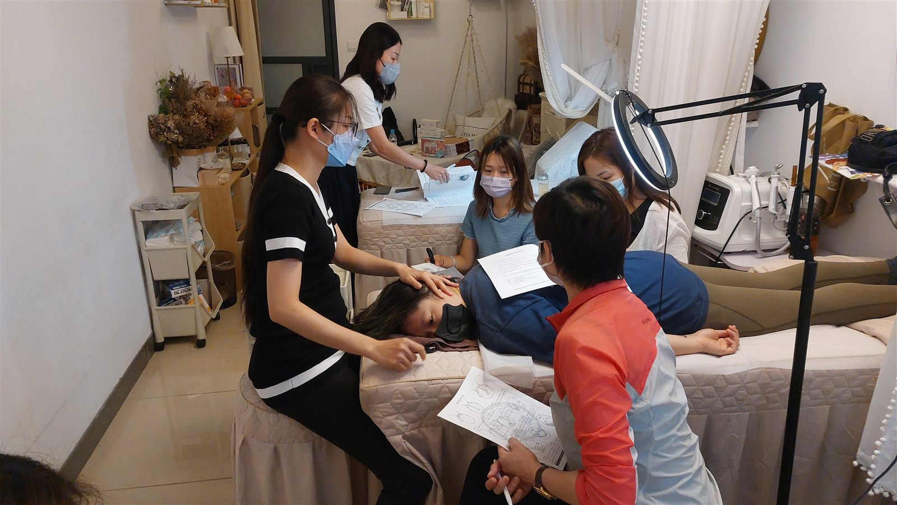

The Bojin Journal
A little library of
gentle face care.
Free, method-led guides from bojin instructor Yu-Ting Lan — organised by the concern you actually have. Start where your mirror bothers you most, and read only what fits.
Browse the library
Nine gentle guides, each a short read with a 5-minute ritual you can try tonight. Filter by the concern you have right now.

Tired, puffy eyes every morning?

A softer jawline & a little double chin

Smile lines settling in, cheeks a little lower

Frown lines & a heavy, tense brow

Dull, puffy, tired-looking skin

Gua sha & bojin: the tool and the technique

The simple morning face ritual
Gua sha not working? The simple fix

You don't need expensive facials
No guides in that category yet — try another.
Not sure where to start?
Let your face point the way.
Answer five quick questions and we'll match you to the right 5-minute ritual — plus a free personalised starter guide. Takes about a minute.
Free starter guide
Give your face ten quiet minutes.
Leave your email and the free guide — the condensed first lesson of the method — lands gently in your inbox. New journal entries follow, only when there's something worth sharing.
No spam, ever. Unsubscribe in one click. This is self-care, not medical treatment.
Lovely — check your inbox in a few minutes for your free guide. 🌿